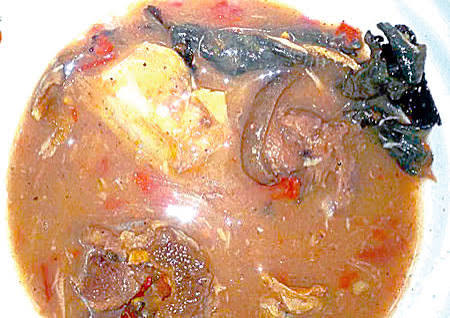
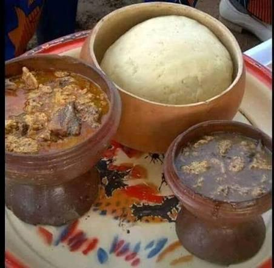
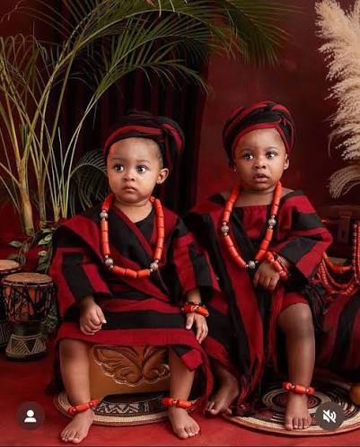
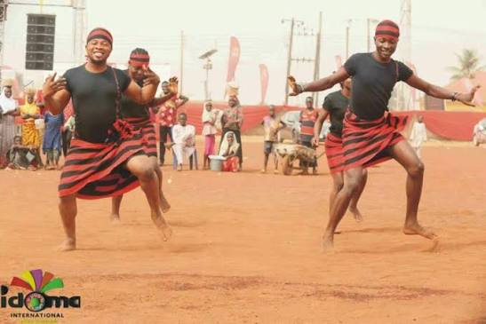
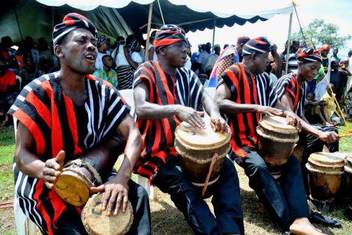
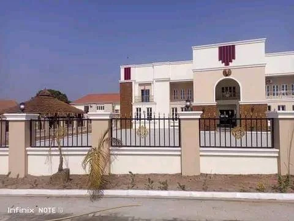

Culture & Traditions
Explore the language, customs, traditional institutions, food, clothing, music and community values that have shaped Idoma identity across generations.
Explore Culture →OUR PEOPLE • OUR CULTURE • OUR STORY
Explore the history, traditions, people, places and cultural identity that continue to shape Idoma Land.
THE LIVING HERITAGE OF THE IDOMA PEOPLE
The Idoma are one of the major indigenous ethnic groups of Nigeria's Middle Belt, with their homeland in southern Benue State. Across generations, the Idoma have preserved a rich heritage through language, oral tradition, music, festivals, craftsmanship and strong communal values.
OUR STORY
The history of the Idoma people predates both modern Benue State and the Nigerian nation. For centuries, history has been preserved through oral tradition, genealogy, dance and storytelling, with families carefully passing the names and memories of their ancestors from one generation to another.
According to Idoma oral tradition, many communities trace their ancestry to the ancient Apa Kingdom and the wider Kwararafa Confederacy. While these traditions remain central to Idoma identity, historians also explain that the Idoma developed through multiple waves of migration and settlement across the Benue Valley, creating the diverse communities that today form Idomaland.
Today, the Idoma homeland comprises nine Local Government Areas in Benue State—Otukpo, Apa, Agatu, Ado, Obi, Ogbadibo, Ohimini, Oju and Okpokwu—while vibrant Idoma communities also thrive in Nasarawa, Kogi, Cross River, Enugu and the Federal Capital Territory.
EXPLORE OUR HERITAGE
Explore the language, customs, traditional institutions, food, clothing, music and community values that have shaped Idoma identity across generations.
Explore Culture →Discover festivals, cultural celebrations and community events that bring Idoma people together and keep cultural traditions alive.
Explore Festivals →Explore historical landmarks, traditional sites, monuments and places of cultural significance across Idoma Land.
Explore Places →OUR WAY OF LIFE
Idoma culture is expressed through language, food, music, clothing, traditional leadership, family life and strong community relationships. These traditions are more than customs from the past; they remain an important part of how Idoma people understand their identity and connection to one another.
Language remains one of the strongest carriers of Idoma identity. Across generations, stories, proverbs, names, songs and family histories have helped preserve knowledge and pass it from elders to younger generations.
Oral tradition has therefore played an important role in preserving the memories of communities and ancestors, especially at a time when much of Idoma history was passed down by word of mouth.
Traditional institutions remain an important part of Idoma cultural life. At the centre of the traditional institution is the Och'Idoma, whose stool represents a symbol of unity, identity and continuity for the Idoma people.
The traditional system also includes community leaders and institutions that help preserve customs, settle community matters and maintain the relationship between generations.
The modern institution of the Och'Idoma dates to 1948, when the stool was established during the period of British administration. Otukpo subsequently became the permanent seat of the Idoma traditional institution.
Food is an important part of Idoma cultural identity. Traditional dishes bring families and communities together and are often closely connected with hospitality, celebrations and important occasions.

One of the dishes strongly associated with Idoma cuisine is Okoho soup. The soup is prepared using the Okoho plant as a key ingredient and may be prepared with meat, including bush meat, alongside other ingredients.
Beyond the meal itself, Okoho represents the connection between Idoma food traditions, local ingredients and communal life. Traditional knowledge surrounding its preparation has been passed down through generations.

Pounded yam also occupies an important place in Idoma food culture. A distinctive tradition associated with Idoma family life is the expectation that men should be able to pound yam for their wives.
What may appear to be a simple household task carries a deeper cultural meaning: food preparation can be an expression of care, partnership and family life.

Clothing is another important expression of Idoma identity. Traditional dress, colours, patterns and styles are worn during cultural celebrations, ceremonies and other important occasions.
The distinctive identity associated with Idoma traditional attire provides a visible connection between the people, their history and their cultural heritage.

Music and dance have long been part of Idoma social and cultural life. They provide a way for communities to celebrate, tell stories, honour important occasions and preserve collective memories.
Traditional performances often bring together music, movement and storytelling, allowing younger generations to experience aspects of their heritage in a living form.
Strong family and community relationships remain central to Idoma society. Respect for elders, communal responsibility, hospitality and the preservation of family history have helped strengthen relationships across generations.
These values continue to influence celebrations, marriage, family gatherings and community activities, connecting modern Idoma life with traditions inherited from earlier generations.
CELEBRATING OUR PEOPLE
Festivals are an important part of Idoma cultural life. They provide opportunities for communities to gather, celebrate their identity, strengthen relationships and pass cultural knowledge from one generation to the next.
Idoma celebrations may bring together music, dance, food, traditional performances, storytelling and communal activities. They create spaces where elders can share knowledge while younger generations experience their heritage firsthand.

Food is closely connected to Idoma cultural celebrations. Traditional dishes provide an opportunity to showcase local ingredients, cooking knowledge and the culinary heritage passed down through families.
Annual food festivals in Benue State have also provided platforms for celebrating traditional cuisine and highlighting the cultural importance of food within communities.
Dishes such as Okoho soup are not simply meals; they represent stories, skills, local resources and traditions that continue to connect generations.
Across Idoma communities, celebrations provide moments for families and communities to reconnect. They can bring together traditional leaders, elders, young people, families and visitors in an atmosphere of unity and shared identity.
Such gatherings also create opportunities for cultural knowledge—including songs, dances, stories, customs and traditional practices—to remain part of everyday community life.
Cultural celebrations play an important role in keeping heritage alive in a rapidly changing world. As Idoma communities become increasingly connected across Nigeria and beyond, festivals provide a way for people to maintain a connection with their roots.
IDOMA-CONNECT will continue documenting these celebrations as part of a growing digital archive of Idoma culture, creating room for communities to contribute their own stories, photographs, videos and historical knowledge.
This section will grow into a collection of Idoma festivals and cultural celebrations from different communities and Local Government Areas.
PLACES THAT TELL OUR STORY
Across Idoma Land are places that carry the memories, traditions and history of the people. From traditional institutions to historic communities and culturally significant locations, these places provide a physical connection to the Idoma story.

Located in Otukpo, the Palace of the Och'Idoma is the seat of the Idoma traditional institution and an important symbol of Idoma unity, leadership and identity.
Otukpo became the permanent seat of the Och'Idoma following the establishment of the modern traditional institution in 1948. Since then, the palace has remained closely connected with the history and administration of the Idoma traditional institution.
Beyond its role as the residence and administrative centre of the Och'Idoma, the palace represents a place where tradition, leadership, history and the collective identity of the Idoma people meet.
Otukpo occupies an important place in the cultural and historical life of the Idoma people. As the permanent seat of the Och'Idoma, the town has long served as an important meeting point for traditional leadership, community affairs and cultural activities.
Its significance extends beyond the traditional institution, as Otukpo remains one of the major urban centres through which Idoma people connect, trade, celebrate and preserve their cultural identity.
The story of Idoma heritage is not contained in one location. Communities across the nine Local Government Areas preserve their own historical sites, traditional institutions, landmarks, sacred places and locations connected to important events and people.
IDOMA-CONNECT will continue documenting these places, creating a growing digital map of locations that help tell the story of Idoma Land.
As the Heritage section grows, communities will be able to contribute information about important places, landmarks and historical locations from across Idoma Land.
IDOMA-CONNECT will continue expanding this collection with photographs, videos, stories, historical records, traditional recipes and contributions from communities across Idoma Land.